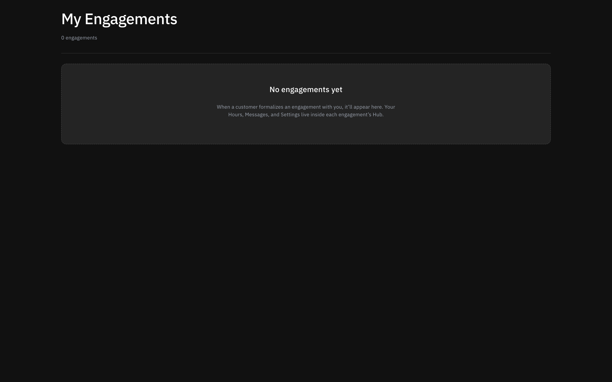
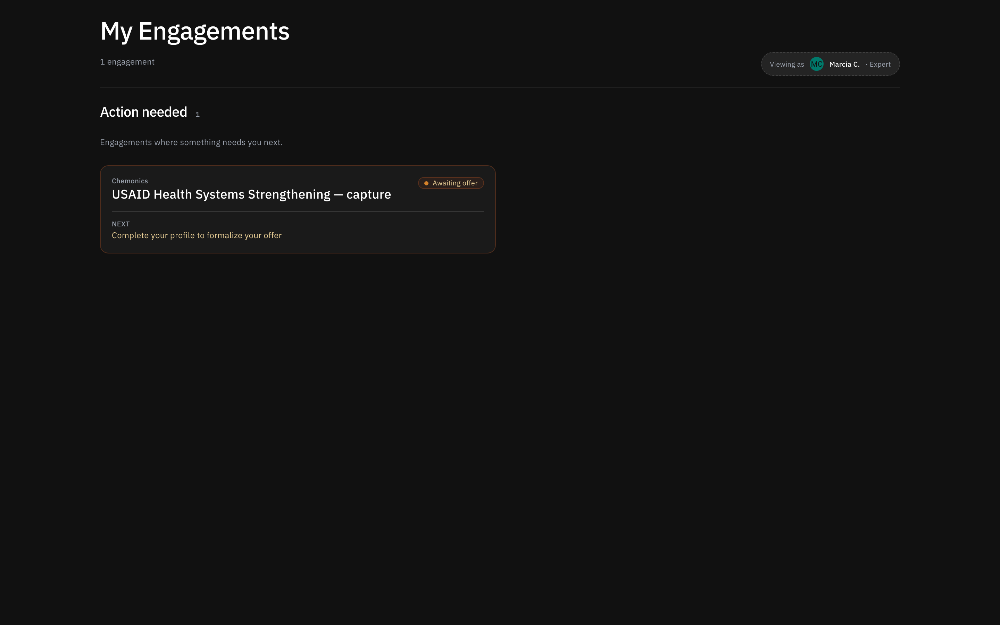
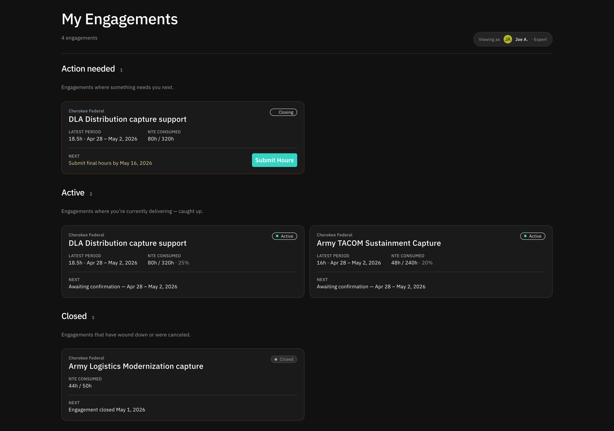

How experts use OnFrontiers.
A walkthrough of the expert experience — from the empty dashboard on day one, through accepting an offer, logging hours, and closing out an engagement. Designed for sharing with prospective experts and partners.
Day one — the empty state.
Joe finishes onboarding and lands on his dashboard for the first time. There's nothing here yet, and the page is honest about that. No fake activity, no tutorial overlays — just a clear statement of what to expect, and where to update his profile so OnFrontiers can match him.

An offer arrives.
A single, focused action.
OnFrontiers has matched Joe to one of Bill's submissions. The dashboard now has a single item — and a single action: review the offer. We deliberately don't crowd this with reading material; the goal is to get Joe to the offer page where the real context lives.

The offer itself.
The offer page lays out the scope, expected duration, rate, and the customer (Cherokee). Joe can accept, decline, or counter. Counter‑offers go back through OnFrontiers fulfillment rather than directly to Bill — protecting the customer relationship and keeping rates clean.

Three buckets, once Joe is busy.
As Joe accumulates engagements, the dashboard organises them into three buckets: action needed, active, and closed. Symmetric with the customer dashboard — and for the same reason. The list isn't a feed; it's a queue of things to do, plus a record of things you're working on, plus history.

The engagement page — Joe's view.
Same shape as the customer's, scoped to what Joe should see — his own rate, hours, and messages, with a redacted view of customer‑side details.
Overview.
The single source of truth for the engagement. Joe sees scope, the customer's identity, his own rate, expected duration, and the running event log. He doesn't see Cherokee's internal budget caps or governance flags — that's deliberately customer‑side context.

Messages.
One thread, scoped to this engagement. Symmetric with what Bill sees on the other side. Joe and Bill are in the same conversation — there's no separate "to OnFrontiers" sidebar in the messages tab, because the engagement page is the place where they collaborate, not where Joe escalates issues.

Settings.
Joe's settings are narrower than Bill's — he can pause his availability, request a scope change, or flag an issue. He can't unilaterally close an engagement; that's a customer‑initiated action, with OnFrontiers as backstop.

Logging hours.
This is the most frequent thing Joe will do on OnFrontiers — likely weekly. So we made it the lowest‑friction surface in the product. One tab, one form, structured rows, and a clear status on each.
Each row Joe submits sits at Pending review until Bill approves. Once approved, it moves to Approved. Payment status (paid / unpaid) is appended to approved rows so Joe always knows what he's owed.

Closing out.
Closing — the wind‑down state.
When Bill marks an engagement complete, it doesn't immediately go quiet. It enters a Closing state where Joe can submit any final hours and Bill can sign off. This avoids the "wait, I had one more hour I forgot to log" problem.

Closed — read‑only, but accessible.
Once everything is settled, the engagement closes. Joe can still open the page — the message thread, the hours record, the scope — but it's read‑only. The engagement moves to the bottom of his dashboard, and stays there as part of his OnFrontiers work history.